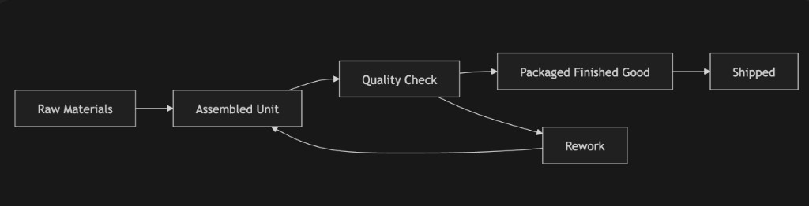
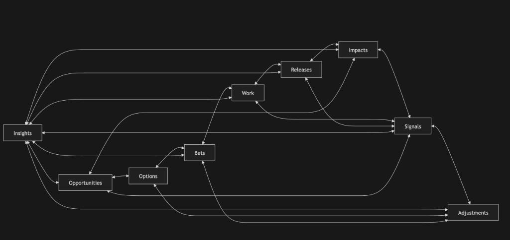
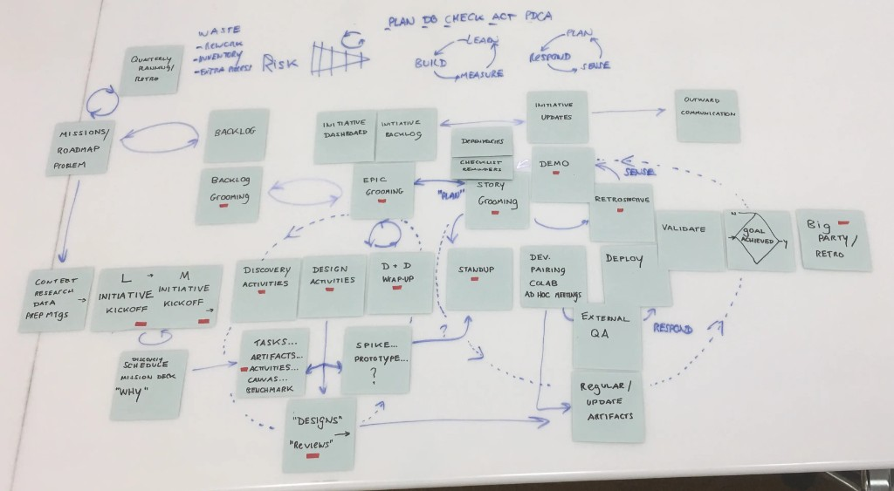

From Clear Flows to Complex Systems
Summary
In clear systems, endurants and perdurants map cleanly; in complex systems, evolving entities, overlapping processes, and state changes become much harder to model.
One way to build intuition for endurants and perdurants is to start with a system where the distinction is obvious, and then move to one where it begins to break down.
A Clear, Linear Case
Consider a simple manufacturing flow:
Raw materials -> Assembly -> Quality check -> Packaging -> Shipping

This is a system where the structure is easy to reason about. The endurants are concrete and stable: parts, machines, finished goods. The perdurants are well-defined: assembly, inspection, packaging. The flow is largely linear, with work moving from one stage to the next in a predictable way.
Time and state exist, but they are not the primary challenge. In practice, you can often treat them as background conditions rather than as the central modeling problem.
- a unit is either assembled or not
- a machine is either running or idle
- a product is either shipped or not
You can model this system effectively without deeply modeling time, because a simple progression through stages is often sufficient. This is what a clear system looks like.
A Common Product Flow
Now consider a typical product development environment:
Insights -> Opportunities -> Options -> Bets -> Work -> Releases -> Impacts -> Signals -> Adjustments
At first glance, this also looks like a flow, but it behaves very differently. The endurants are more abstract and fluid: things like opportunities, bets, initiatives, and goals are not physical objects. They evolve, get reinterpreted, split, merged, and sometimes disappear.
The perdurants are also overlapping and non-linear. Discovery, shaping, delivery, and learning are not clean stages, because they happen simultaneously and influence each other continuously. The structure is not truly linear.
There are multiple interacting loops:
- discovery loops
- delivery loops
- feedback loops
These loops intersect and interfere with each other.
Here is a more realistic picture of that kind of product flow:


Here is a real-world mapping of a team's product development flow. Notice all the loops, and the non-linear, multi-tiered nature of the system.
When Time Moves Forward
The key difference is not that manufacturing has time and state and product does not. The difference is where the modeling burden sits.
In clear systems:
- time and state are background concerns
- you can often treat them as implicit
- a simple stage-based model is enough
In complex systems:
- time and state become first-class concerns
- the meaning of things depends on when you look at them
- the same entity can be in multiple overlapping states
For example:
- an
opportunitycan be emerging, validated, deprioritized, or revived - a
betcan be tentative, active, paused, or abandoned impactmay lag behind releases and be interpreted differently over time
You cannot fully understand the system by asking, "Where is this in the flow?"
You have to ask:
- what is the current state?
- how did it get here?
- what changed, and when?
Modeling Implications
This shift has direct implications for how you model. Endurants become more abstract, even though they are still "things." In complex settings they are conceptual and evolving:
- opportunity
- initiative
- metric
- goal
They persist, but their properties and meaning change over time.
Perdurants also become less cleanly bounded. They are no longer simple, linear processes:
- discovery work blends into delivery
- experiments overlap with releases
- feedback loops continuously reshape the system
The same perdurant may not have a clear start and end. As a result, events and transitions become critical, and you need to model:
- when something changed
- what the previous state was
- what the new state is
- why the change happened
Without this, the system becomes hard to reason about.
A Simple Contrast
A useful way to summarize the difference is this. In manufacturing, the question is, "Where is this unit in the process?" In product development, the question is, "What is the current state of this evolving entity, and how has it changed over time?"
Why This Matters
If you approach complex systems with a clear-flow mindset:
- you over-simplify the structure
- you hide important state changes
- you lose the history of how things evolved
If you recognize the shift:
- you treat endurants as evolving entities
- you treat perdurants as overlapping processes
- you model events and transitions explicitly
- you make time and state visible where they matter most
This is the point where endurants and perdurants stop being abstract ontology terms and become practical modeling tools. They become a way to decide what needs to be modeled explicitly, and what can remain implicit.
Try This Now
- Write down one part of your organization where the stable thing and the unfolding process map cleanly.
- Then write down one part where the "thing" keeps changing shape and the process overlaps with other processes.
- Ask: where would you need explicit state, transitions, or history rather than a simple stage view?
Keep Reading
RAG Status, Endurants, and Perdurants